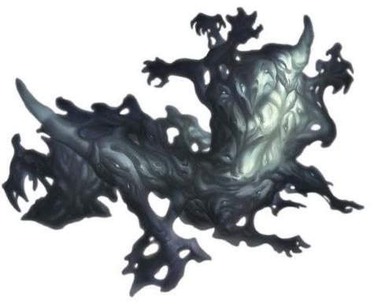

融魂由凡人褪色的灵魂组成——它们是记忆被杜鲁尔消耗殆尽的空壳。这些空壳通常无害，但有时候，一个富有侵略性的核心也会将其他空壳聚集起来，形成一个致命的形态。融魂的是半融为一体的幽灵存在，它具有无定型的外表，充满从混沌之中浮现出，然后又再度被吞入的模糊肢体和面孔。它移动时悄然无声，但融魂周围的凡人会听到痛苦的哭泣声、哀求的啜泣和灵异的呻吟。它的“茫然之魂”动作反应了它将一些身体里的空壳投射到凡人身体中，以相悖茫然的欲望和幻觉来吞没受害者的能力。
杜鲁尔居民Denizens of Dolurrh.融魂诞生于杜鲁尔，在死者国度那无尽的洞穴中寻找记忆的残渣。当位于显能区域或位面相接时，这种饥饿感会将它们引诱至艾伯伦。当死者复生时，融魂有时也会跟随灵魂的踪迹被拉回到活人的世界。进入艾伯伦的融魂很少离开距离它们抵达地点超过一里的距离。
渴求记忆Hunger of Memory.融魂身体里有着数十个灵魂留下的痕迹。它会记住组成自己的空壳在最为强盛的时期的碎片，但无法将它们和其他记忆联系起来。融魂希望吞噬其他的灵魂，饕餮它们的记忆和情感。虽然极不寻常，但在融魂之中，一个强大的人格可能会暂时夺取控制，令融魂追杀某个特定的个体豁将其吸引至特定位置。当融魂杀死一个生物并吞噬其灵魂时，其中海量的记忆也会发生改变，令它会突然按照最近的受害者所希望的行事。
迷失在艾伯伦的融魂保存了它所吞没的灵魂，阻止它们进入杜鲁尔。这样能够防止灵魂衰退：一名角色能够听到困在融魂中灵魂的低语，它的空壳能够容纳许久以前死者的灵魂。而这样的副作用则是，被融魂杀死的生物在它被摧毁之前无法复活。

大型不死生物，任意阵营
AC：11
HP：119（14d10+42）
速度：40尺
力量18（+4） 敏捷13（+1） 体质16（+3）
智力8（-1） 感知12（+1） 魅力17（+3）
技能：隐匿+4
伤害抗性：强酸，冷冻，火焰，闪电，非魔法武器的钝击、穿刺、挥砍
伤害免疫：黯蚀，毒素，心灵
状态免疫：魅惑，力竭，恐慌，擒抱，麻痹，石化，中毒，倒地，束缚
感官：黑暗视觉60尺，被动察觉11
语言：理解一切生前的语言但不会说
挑战等级：6（2300 XP）
以太视界Ethereal Sight。融魂在物质位面时可以看见身边60尺以太位面的景色，在以太位面时可以看见身边60尺内物质位面的景色。
虚体形态Incorporeal Form。融魂无视非魔法的困难地形，并且能够如同施展了水上行走water walk法术在液体表面行走而不会落入其中。
虚体移动Incorporeal Movement。融魂可以如同穿过困难地形一样穿过其他生物和物件。如果它在自己的回合结束时仍处在物件内部则受到5（1d10）点力场伤害。
动作Actions
多重攻击Multiattack。融魂进行四次攻击。或者它也可以进行两次攻击并使用茫然之魂能力。
枯萎猛击Withering Slam。近战武器攻击：命中+7，触及10尺，单一目标。命中：11（2d6+4）黯蚀伤害。
茫然之魂Conflicted Soul。融魂令其选择的一个30尺内可见的生物进行一次DC14的魅力豁免。失败的情况下，该目标受到困惑术confusion的效果（无需专注）。
以太化Etherealness。融魂可以在物质位面和以太位面之间转换。身处以太边境时，物质位面中也可以看到它，反之亦然。融魂身处其中某一位面时，无法影响另一位面之物或被另一位面之物影响。